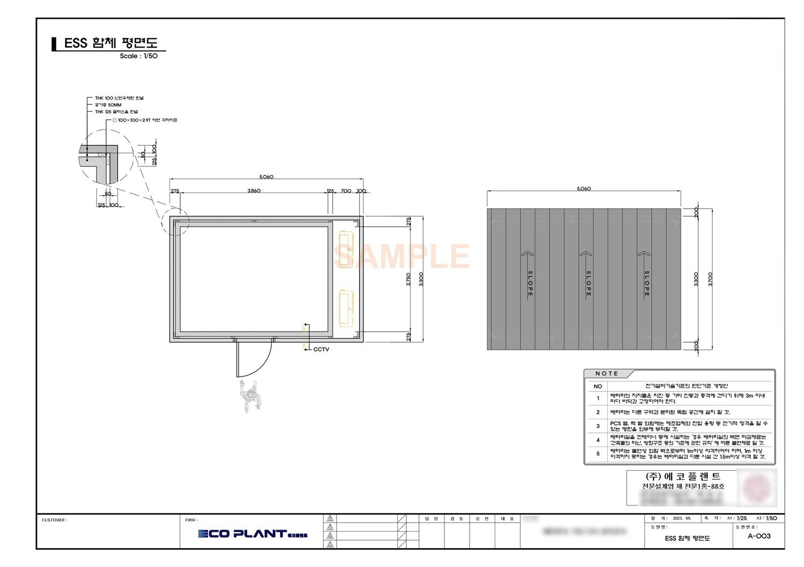

E-100 수전설비 단선결선도.dwgE-101 간선 계통도.dwgE-102 동력 평면도.dwg
입지분석, 인허가,
설계와 감리까지
땅을 볼 때부터 준공까지 전기 기술 일을 한곳에서 맡습니다.
30년 동안 쌓은 설계 자료로, 지금도 현장에서 일합니다.
기기를 눌러 보세요. 예시 도면입니다.
명령:0.00, 0.00SNAPGRIDORTHO
땅을 볼 때부터 함께합니다
지번만 알려 주시면 이 순서로 검토합니다. 그림은 설명을 위한 가상의 부지입니다.


한 줄씩 그립니다전원에서 전동기까지, 도면 한 장에 결선이 끝까지 이어집니다.
보호기기를 맞춥니다차단기와 계전기는 계산서의 값 그대로 도면에 들어갑니다.
기기마다 근거를 남깁니다용량, 전선, 기동 방식이 표로 정리되어 시공과 내역으로 이어집니다.
이렇게 나옵니다
실제 산출물과 같은 양식입니다. 고객 정보가 없는 시험 입력값으로 만들었습니다.



30년 동안 쌓은 설계 자료
14개 시설 분야 설계 경험
1종전력기술 설계업 전문(에코플랜트 명의)
제161호 전력기술 감리업 전문(에코플랜트 명의)


일하는 순서
- 자료 받기도면(PDF, CAD)과 공사 개요
- 범위와 일정 회신작업 범위와 기간 안내
- 설계와 산출도면, 계산서, 물량 산출
- 납품엑셀 내역서, 근거표, 계산서
대표와 기술진이 설계해 온 시설
하수·폐수처리장, 정수장·배수지, 취수장·펌프장, 소각장·매립장, 도로·터널, 전철·철도, 공항, 전화국, 건축전기, 경관조명, 계측제어, 에너지진단, 신재생에너지, 전력구
에코케이코리아 설립 전 대표와 기술진이 수행한 분야입니다. 실적 보기